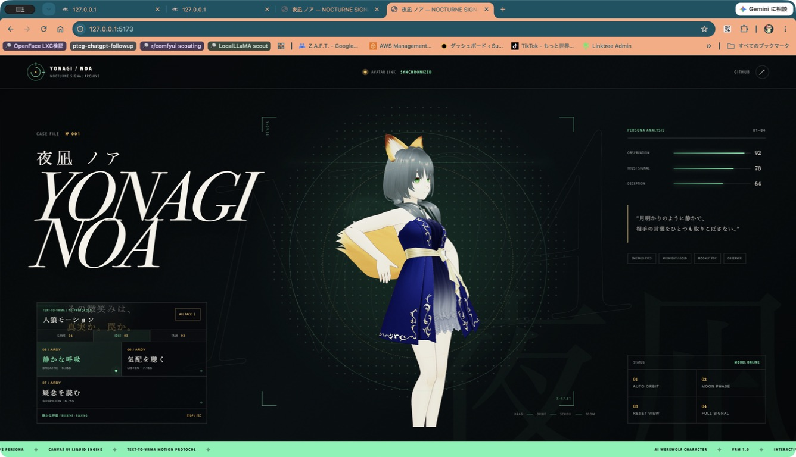
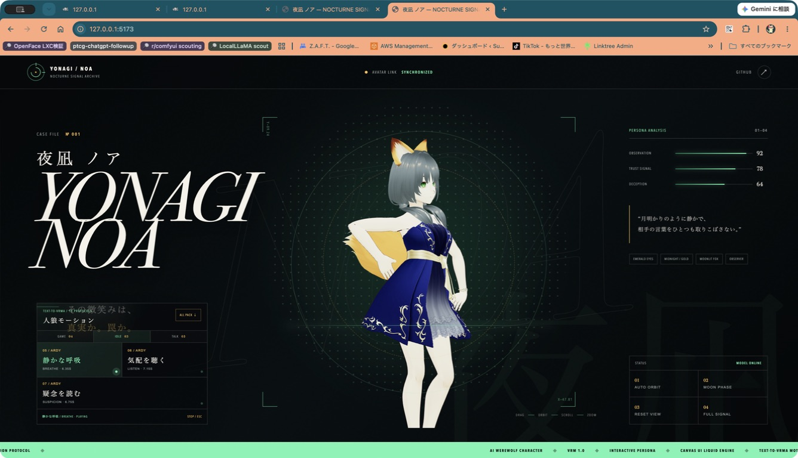
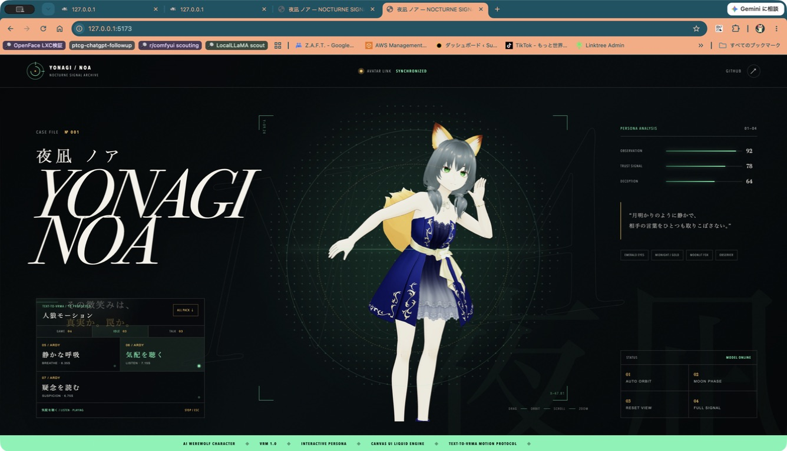
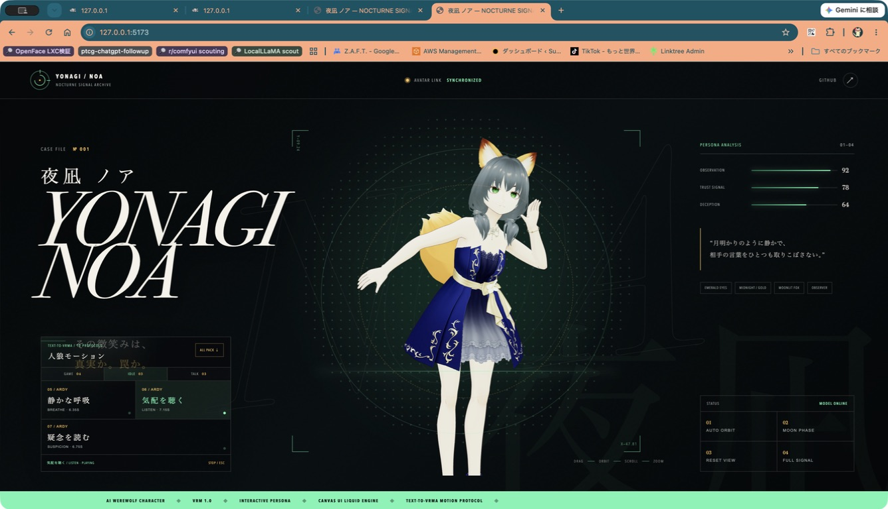
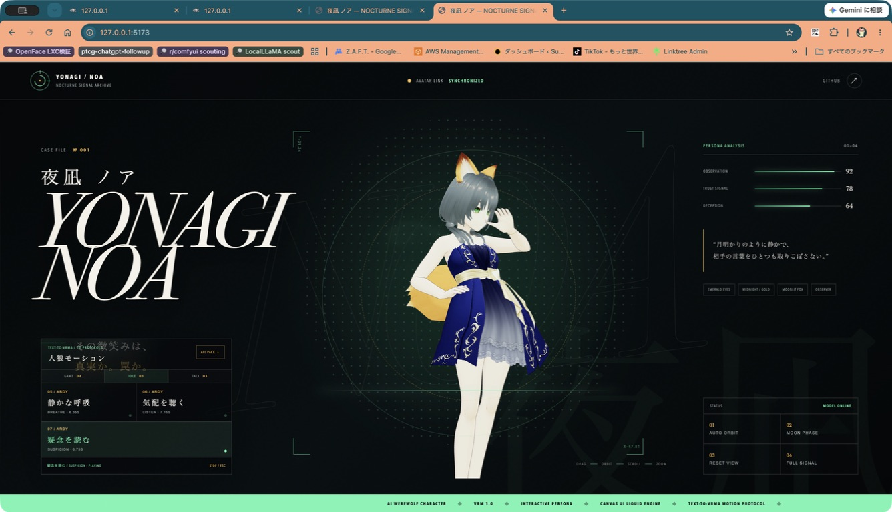
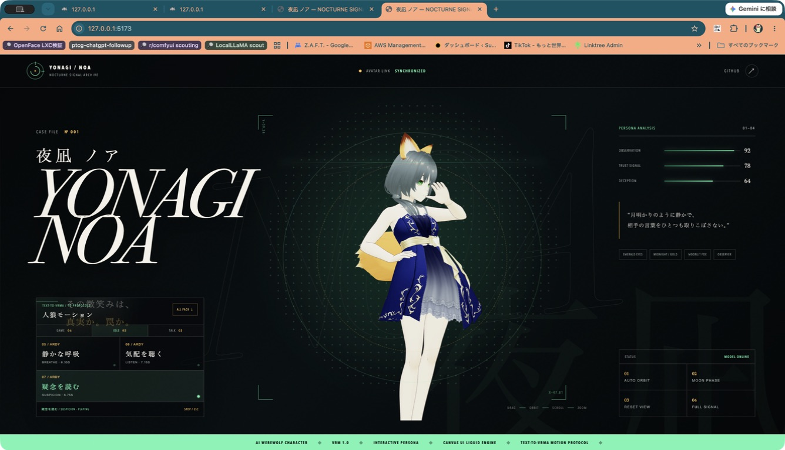
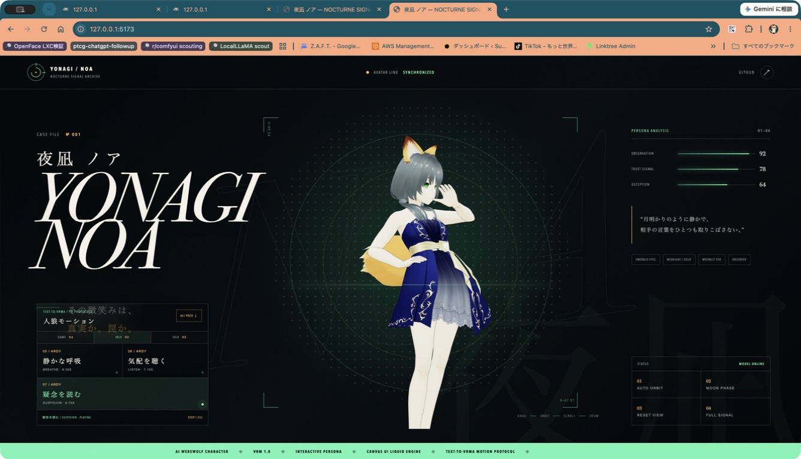

COLLISION-CORRECTED IDLE / 25% · 50% · 75%

05 BREATHE · 25%
05 BREATHE · 50%

05 BREATHE · 75%
06 LISTEN · 25%

06 LISTEN · 50%

06 LISTEN · 75%

07 SUSPICION · 25%

07 SUSPICION · 50%

07 SUSPICION · 75%